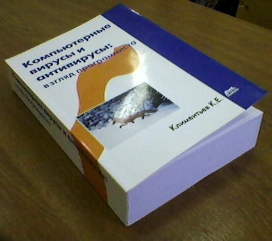

Климентьев К.Е.
Компьютерные вирусы и антивирусы: взляд программиста
|
Эта маленькая страничка создана для продвижения моей книжки «Компьютерные вирусы и антивирусы: взгляд программиста», которая крохотным тиражом вышла в феврале 2013 года в издательстве «ДМК-Пресс».

1. Выходные данные
Климентьев К.Е. Компьютерные вирусы и антивирусы: взгляд программиста. – М.: ДМК-Пресс, 2013. – 656 с. – ISBN 978-5-94074-885-4.
2. Формальная аннотация
Книга представляет собой курс компьютерной вирусологии, посвященный подробному рассмотрению феномена саморазмножающихся программ. Содержит неформальное и формальное введение в проблему компьютерных вирусов, описание принципов их работы, многочисленные примеры кода, методики обнаружения и удаления, а также лежащие в основе этих методик математические модели. Рассматривает все наиболее широко распространенные в прошлом и настоящем типы вирусов. Ориентирована на самую широкую аудиторию, но прежде всего на студентов и программистов – будущих и действующих специалистов в области защиты информации и разработки системного и прикладного программного обеспечения. Также может быть полезна и интересна «рядовым» пользователям, интересующимся проблемой компьютерных вирусов.
3. Неформальные пояснения от автора
3.1. О чем эта книжка
Эта книга о «настоящих» компьютерных вирусах, то есть о саморазмножающихся программах. Увы, про «троянские программы» в ней принципиально ничего нет. Если бы я писал книжку про них, она была бы раза в три толще. Впрочем, может быть, я такую книжку еще сочиню. Но не в этот раз.
3.2. Кому она предназначена
Я старался сделать уникальную книжку, в которой сочетались бы и «беллетристика», и «программирование», и «математика». Соответственно, что-то полезное для себя в ней найдут и «нормальные» пользователи, и программисты, и далекие от программирования IT-специалисты. Насколько я в курсе, такой книжки «про вирусы» еще не было - ни у нас, ни у «буржуев». Нехай теперь будет. :)
3.3. Зачем я написал эту книжку
У меня сложилось впечатление, что на сегодняшний момент «компьютерная вирусология» - это беспорядочный набор различных сведений, рассыпанных по книжкам, электронным журналам, Интернет-форумам и словесно передаваемым легендам и мифам. Часть этих сведений не совсем корректна, другая - забыта, третья – намеренно замалчивается. Своей книжкой я попытался собрать эти информационные осколки, очистить от грязи и сложить из них цельную картину.
3.4. Почему я написал эту книжку
Когда-то давным-давно, еще в прошлом тысячелетии я написал большую (и наивную) статью «про вирусы» и выложил ее в Интернет. В итоге она послужила текстуальной основой аж для 4 (четырех) чужих книжек, под которыми подписались совсем другие «авторы». Тогда я пообещал сочинить и издать-таки «свою» книжку. Что ж, пусть и спустя 15 лет, но сдержал обещание. J
3.5. Почему книжка получилась именно такая
То, что я сочинил, от того, что я издал, несколько отличаются по содержанию. К сожалению, в последний момент пришлось выкинуть из рукописи довольно объемные куски и фрагменты:
- приложение «Справочник вирусочитателя» - около 80 страниц с кратким описанием BIOS- и MS-DOS-прерываний, Win32 API – функций, команд WordBasic и VBA, процедур LibC и разнообразных форматов данных;
- приложение «Справочник вирусокопателя» - около 30 страниц, кратко описывающих работу с Debug, Turbo Debugger, WinICE, Olly Debugger, Bochs, HIEW, Sourcer и IDA;
- раздел с длинными листингами, посвященный виртуальным драйверам, сканированию памяти, хукам и т.п. (около 20 стр. в сумме);
Принципиально не вошли в книжку «чисто троянские» технологии – уязвимости в PDF, «заминированные» html-странички, приемы SQL-инъекции и т.п.
Так же примерно на 25% по сократились главы, посвященные загрузочным и MS-DOS-вирусам, да и не жалко. Сократил бы сильней, но тогда пропала бы целостность картины.
Ну и, понятное дело, я не собирался делать из этой книжки диссертацию или энциклопедию. Если что-то упустил или описал недостаточно корректно, - так это исключительно в целях повышения читабельности и демократичности.
3.6. Где книжку взять
К сожалению, она вышла очень маленьким, «пилотным» тиражом. Шанс на повторное издание появится, если «пилотный» тираж будет раскуплен. Пока книжку можно:
- заказать или купить в магазине Издательства (это самый дешевый вариант);
- заказать в других Интернет-магазинах (например, вот или вот);
- вероятно, купить в бумажном виде в крупных магазинах МСк и СПб.
3.7. Как связаться с Автором
E-mail: drmad@dr.com
3.8. Оглавление
Ну и на закуску, чтобы иметь представление о содержимом книжки, – вот оно «Оглавление».
(с) Constantin E. Climentieff aka DrMad,
mailto: drmad@dr.com * http://www.chat.ru/~drmad
|